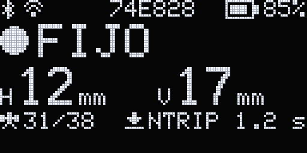
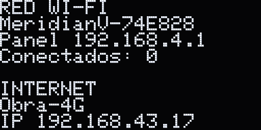
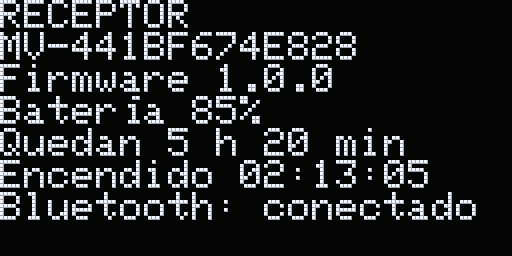
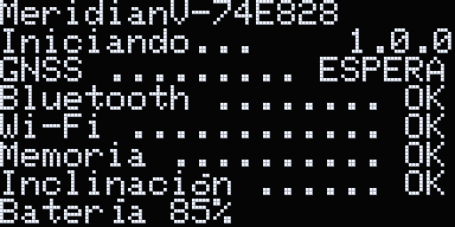
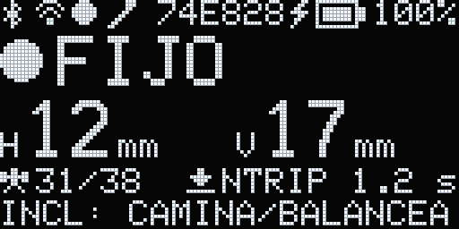
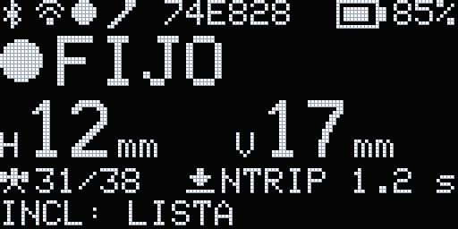
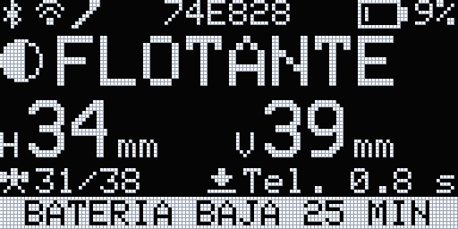
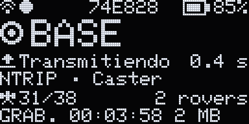
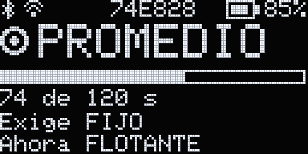
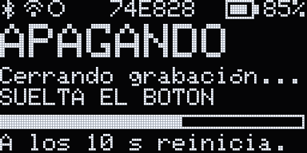

El receptor
El MeridianV tiene un solo botón, en la cara plana del frente, una pantalla pequeña y un puerto USB-C. Lo demás se hace desde la app.
El botón
Encender
Con el receptor apagado, mantén presionado el botón 1 s.
Cambiar de página
Un toque corto pasa de la pantalla principal a la de la red Wi-Fi, luego a la del receptor y de vuelta a la principal. Si la pantalla está atenuada, el toque solo la despierta.
Apagar
Mantenlo presionado: la pantalla dice «APAGAR» y llena una barra. A los 2 s dice «APAGANDO» y «SUELTA EL BOTON»: suéltalo. El receptor cierra la grabación, si hay una, y se apaga. Si sueltas antes de los 2 s, no pasa nada.
Reiniciar
Si no responde, mantenlo presionado 10 s: se reinicia en vez de apagarse. Por eso, para apagar, suelta en cuanto veas «APAGANDO».
Grabar sin el teléfono: da cinco toques cortos seguidos para iniciar la grabación para posproceso; la pantalla dice «GRABANDO». Otros cinco toques la detienen: «GRAB. DETENIDA».
Si no puedes entrar a la red del receptor (olvidaste la contraseña que pusiste o apagaste el Bluetooth): da siete toques cortos seguidos. La pantalla pregunta «¿Reiniciar la red?»; mantén el botón 2 s. El receptor se reinicia con la contraseña Wi-Fi de fábrica y el Bluetooth encendido, y la página de red de la pantalla enseña la contraseña. La base, los perfiles NTRIP, las redes guardadas y tus datos se conservan.
Para restablecer todo de fábrica: con esa pregunta en la pantalla, da otros cinco toques cortos; la pregunta cambia a la de restablecer de fábrica. Mantén el botón 2 s para confirmar o da un toque corto para cancelar. Borra las redes, los perfiles NTRIP, la base y las preferencias; conserva las grabaciones y la calibración de la IMU. También se puede hacer desde el panel del receptor, en Diagnóstico.
Si apagas con el cable USB conectado, el receptor queda en reposo de carga: la pantalla dice «CARGANDO» y «Receptor en reposo». Solo carga. Para encenderlo, mantén el botón 1 s.
La pantalla
Al encender verás el logo y una lista de comprobación: GNSS, Bluetooth, Wi-Fi, memoria, inclinación y batería. Después sale la pantalla principal. La pantalla no se apaga sola: tras 60 s sin cambios baja el brillo y se despierta con un toque corto.

- Arriba
- A la izquierda, los iconos que aplican: Bluetooth (un teléfono conectado), Wi-Fi (conectado a una red, o alguien conectado a la red del receptor), grabación (parpadea mientras graba) e inclinación (fija si la compensación está lista, parpadea si no). En medio, la terminación del nombre del receptor, 74E828. A la derecha, el rayo al cargar y la batería con su porcentaje, el mismo que en la app.
- La calidad
- FIJO, FLOTANTE, DGPS, AUTONOMO, SIN POS. o SIN DATOS (el módulo GNSS todavía no manda nada). Al pasar a FIJO la pantalla destella.
- H y V
- La precisión en planta y en vertical que muestran también las apps: en milímetros y, desde un metro, en metros. Con la compensación de inclinación en uso, es la de la punta del bastón. «--»: sin dato.
- Satélites y correcciones
- 31/38: satélites rastreados y visibles. Luego la fuente de las correcciones y su edad: «NTRIP» (NTRIP del receptor), «Tel.» (NTRIP por el teléfono) o «Radio»; «Sin corr.» si no hay. Pasados 99 s dice «>99 s».
- Última línea
- La grabación y el estado de la inclinación, que se turnan cada 3 s («INCL: LISTA», «INCL: CAMINA/BALANCEA»…). Con la batería baja, el aviso ocupa la línea en negativo.









Las pantallas son vistas previas del dibujo del firmware 1.0.0 con datos de ejemplo.
Carga
Carga por el USB-C del receptor, con un cargador de 5 V. Mientras carga, la pantalla enseña un rayo junto a la batería. Puedes usarlo mientras carga.
Número de serie y red Wi-Fi
El número de serie es «MV-» y 12 caracteres, por ejemplo MV-441BF674E828. Viene en el código QR de la etiqueta, pegada por dentro de la tapa del costado que cubre el USB-C y la microSD (se ve al abrirla), y en la app: Receptor › Sistema y firmware › Número de serie.
El receptor tiene su propia red Wi-Fi, MeridianV-XXXXXX. XXXXXX son los 6 últimos caracteres del número de serie: el MV-441BF674E828 crea la red MeridianV-74E828. Con ese mismo nombre aparece por Bluetooth y en la pantalla. Si tu receptor traía el firmware 0.10, al pasar a 1.0.0 la red y el Bluetooth cambian de nombre (antes eran solo los 4 últimos caracteres, MeridianV-E828): vuelve a elegir el receptor en la app y la red en el teléfono.
La contraseña de fábrica es TresVizoRTK, igual en todas las unidades. La app te avisa: «El receptor usa la contraseña de fábrica, igual en todas las unidades. Cámbiala.» Cámbiala en Receptor › Red Wi-Fi › Red del receptorReceptor › Conexiones › Red Wi-Fi: de 8 a 63 caracteres, sin acentos ni ñ.
La red está siempre activa y admite hasta 4 teléfonos o computadoras a la vez.
El panel web
Conecta el teléfono o la computadora a la red MeridianV-XXXXXX y abre http://192.168.4.1 en el navegador. Si el receptor está conectado a otra red, usa meridianv-xxxxxx.local (en minúsculas, por ejemplo meridianv-74e828.local) o la IP que muestra la pantalla.
El panel tiene Campo, Base / rover, Correcciones, Grabación / PPK, Conexiones y Configuración. Sirve para grabar sin la app, para actualizar el firmware con un archivo y para generar el archivo de diagnóstico que pide soporte técnico.
Conectar la app
La app se conecta al receptor por Bluetooth. No lo emparejes en los ajustes del teléfono: el receptor no pide PIN y la app lo encuentra sola.
- Enciende el receptor y espera la pantalla principal.
- Abre TresVizo Field en la pestaña Receptor. En Receptores, bajo Cerca, aparece como «MeridianV · 74E828»: el modelo y la terminación del nombre de su red.
- Toca Conectar.
- La primera vez, el teléfono pide permiso de Bluetooth. Acéptalo. En Android 12 o posterior es el permiso de dispositivos cercanos; en Android 11 o anterior, además, la ubicación del teléfono tiene que estar encendida.
Si sale «No se encontraron receptores», revisa que el receptor esté encendido y a menos de 10 m, y toca Reintentar. La búsqueda se detiene sola a los 30 s.
Solo un teléfono a la vez por Bluetooth: mientras uno está conectado, el receptor no aparece en los demás.


Bluetooth o Wi-Fi
Trabaja por Bluetooth y usa el Wi-Fi para mover archivos. La app lo dice así:
«Por Wi-Fi la posición se actualiza a intervalos. Para capturar, usa Bluetooth.»
«Descargar grabaciones y actualizar el firmware requieren Wi-Fi.»
Para conectar por Wi-Fi, conecta el teléfono a la red MeridianV-XXXXXX. Luego, en Receptores › Otras formas de conectar, toca Buscar en la red Wi-Fi o Agregar por dirección IP con 192.168.4.1. En Android también puedes tocar Conectarse a la red del receptor: Android pide permiso y se une a la red desde la app.
Con la pantalla bloqueada
Con el receptor conectado por Bluetooth, la app sigue avisando aunque bloquees el teléfono o cambies de app: si se pierde el FIJO o las correcciones, si se corta el NTRIP del teléfono o del receptor, y de los avisos del receptor. La primera vez pide permiso para las notificaciones: acéptalo. Solo por Wi-Fi, iOS detiene la app al salir de ella.
En Cuenta › Con la app fuera de la vista están esos avisos y Solución en la pantalla bloqueada: la solución y la edad de las correcciones en la pantalla bloqueada, mientras corre el NTRIP por el teléfono o una captura.la solución y la edad de las correcciones en la notificación de la app, también con la pantalla bloqueada.
Los tonos y la vibración están en Cuenta › Campo, en Sonidos y Vibración. Con el teléfono en silencio no suena nada.
Haz esto una vez en Android
Excluye la app de la optimización de batería. Si no, Android puede detener la conexión con el receptor cuando la app queda en segundo plano y cortar las correcciones.
Entra a Cuenta › Campo › Optimización de batería y, en la lista del sistema, excluye TresVizo Field.

Altura de antena
Mídela vertical, del suelo a la base del receptor. No a la antena.
Altura de antena. Del suelo, la marca, a la base del receptor: el asiento de la rosca de 5/8" donde entra el bastón o el adaptador de la base nivelante. La mides tú y la ingresas.
De la base del receptor a la base de la antena. La app lo suma sola: no lo sumes tú.
Dibujo a escala, con un bastón de 1.800 m. El detalle está 8 veces más grande.
Con el bastón a 1.800 m, ingresa 1.800 m. La base de la antena queda a 1.916 m del suelo; esa cuenta la hace la app.
Los 0.116 m no aparecen en pantalla. Van en el archivo que exportas, como Desp_antena_m.
La altura de antena es del proyecto: se ingresa al crearlo y se cambia en proyecto › ••• › Ajustes de capturaproyecto › ⋯ › Ajustes de captura. Hay valores rápidos de 1.5, 1.8, 2.0 y 2.5 m.
En una base, igual: vertical, de la marca a la base del receptor.


Compensación de inclinación
Con la compensación de inclinación capturas con el bastón inclinado hasta 60°. La IMU del receptor sale calibrada de fábrica: en cada sesión solo caminas unos pasos o balanceas el bastón. La precisión en pantalla ya incluye lo que agrega la inclinación.
La compensación viene apagada. Enciéndela con Compensación de inclinación en Receptor › IMU o en Ajustes de captura, sección Inclinación. El ajuste se guarda en el receptor.
Calibrada de fábrica
La IMU del receptor sale calibrada de fábrica: no tienes que calibrarla tú. Después de un golpe fuerte o una caída, lleva el receptor a servicio técnico para que revisen la calibración. Hasta entonces, mide con el bastón vertical.
Iniciar el rumbo
Para compensar, el receptor necesita saber hacia dónde mira. Lo averigua solo, con RTK fijo, cuando te mueves con el bastón. Mientras falta, la app muestra la barra «Sin compensar» y la pantalla del receptor, «INCL: CAMINA/BALANCEA».
«Camina unos pasos o balancea el bastón.»
Para balancear sin moverte del punto: con la punta quieta en el suelo, inclínalo adelante y atrás y luego de lado a lado unos segundos, unos 5° o más hacia cada lado.


Cuando el rumbo está listo, la app muestra «Compensada», con la inclinación y la incertidumbre que agrega, y la fila IMU dice «Lista».
Con la compensación en uso, la precisión que muestra la app es la de la punta: la del receptor más lo que agrega la compensación. Por eso sube un poco al inclinar el bastón y vuelve a la de siempre con el bastón vertical o la compensación apagada.
El rumbo caduca
El rumbo se mantiene mientras trabajas. Si el bastón pasa mucho tiempo sin moverse, pierde exactitud y caduca; un golpe también lo invalida. La app te lo pide:
- «El rumbo caducó: camina unos pasos o balancea el bastón.»
- «Hubo un golpe: camina unos pasos o balancea el bastón.»
Límites
- Más de 60°: «Inclinación mayor de 60°. Endereza el bastón.»
- «La compensación agregaría más de 4 cm de incertidumbre. Endereza el bastón o balancea de nuevo.» El receptor no da la punta por buena si lo que agrega la inclinación pasa de 4 cm. Suele pasar si el bastón lleva un par de minutos quieto en la mano: camina unos pasos o balancéalo.
- «La altura de antena no coincide con el balanceo. Revísala y balancea de nuevo.»
Si la punta deja de valer mientras capturas, la app pausa el promedio y te pregunta: endereza el bastón (o balancéalo) y sigue, o guarda el punto marcado «sin compensar».
La exactitud a ángulos grandes todavía está pendiente de validar en campo; en Receptor › IMU la app indica «Sin validar en campo.». Compara tus primeros puntos inclinados con el mismo punto medido con el bastón vertical.


Correcciones
Para RTK, el receptor necesita correcciones. Usa una sola fuente a la vez: al elegir otra, se sustituye la actual.
Todo está en Receptor › Correcciones.
NTRIP por el teléfono
- La app recibe las correcciones por los datos del teléfono y se las pasa al receptor por Bluetooth.
- Admite casters con TLS y VRS. Para VRS, activa «Enviar posición al caster»: se envía cada 10 s.
- Los datos del caster se guardan en el teléfono.
- «Con la pantalla bloqueada, iOS puede cortarlo: para trabajos largos, usa NTRIP del receptor.»
NTRIP del receptor
- El receptor se conecta solo a internet por una red Wi-Fi de 2.4 GHz, por ejemplo el punto de acceso personal del teléfono. Agrégala en Receptor › Red Wi-FiReceptor › Conexiones › Red Wi-Fi.
- Habla NTRIP v2 y, si el caster no la admite, v1. Admite casters con TLS (revisa el certificado antes de enviar la contraseña) y redes VRS: envía su posición si el punto de montaje la pide.
- Guarda hasta 5 perfiles. Con Conectar al encender, el elegido se conecta solo cada vez que enciendes el receptor.
- Una contraseña o un punto de montaje equivocados no se reintentan sin fin: la conexión se detiene y dice el motivo.
- No depende del teléfono: sigue aunque bloquees el teléfono o cierres la app. Solo funciona en modo rover.
Agregar un perfil
Entra a Receptor › Correcciones › NTRIP del receptor › Agregar perfil e ingresa servidor, puerto (2101 es el habitual), punto de montaje, usuario y contraseña. Toca Guardar.
También puedes tocar Conectar sin guardar perfil.Después aparecen Conectar y Conectar al encender.
Más abajo están Versión («Automática»: v2 y, si no, v1), TLS (suele ser el puerto 443), Enviar posición al caster («Automático»: si el punto de montaje la pide, cada 10 s) y el Marco de las correcciones, si tu red lo indica (p. ej. ITRF2008, 2010.0). NTRIP por el teléfono tiene campos parecidos y la lista de puntos de montaje.


Cuando se pierden
El receptor mantiene el FIJO 30 s sin correcciones nuevas. Después deja de estar en FIJO. Ese tiempo se cambia, de 1 a 600 s, en el panel web: Ajustes GNSS › Edad máxima para el FIJO. Lo ves así:
- En la barra de estado, la edad de las correcciones se pone ámbar desde 5 s y roja a más de 30 s. «Sin corr.»: no hay fuente.
- A los 30 s llega el aviso «No llegan correcciones desde hace más de 30 s. Revisa la fuente de correcciones.», con Ver correcciones.
- En Correcciones, el enlace RTK dice «Correcciones con retraso. Revisa la red o el caster.» o «Sin correcciones desde hace más de 30 s. Se perderá el RTK.»
- Al capturar: «Correcciones ausentes o retrasadas.», según la «Edad máxima de correcciones» de Ajustes de captura.
- En la pantalla del receptor, la edad sube hasta «CORR. NTRIP >99 s».
- El teléfono vibra al cortarse las correcciones (Cuenta › Campo › Vibración).
Base propia
Con dos receptores, uno puede ser la base. Abre el asistente en Receptor › Modo › BaseReceptor › Modo › Cambiar modo › Base › Asistente de base y elige cómo conoces la coordenada:
- Coordenada conocida: latitud y longitud WGS 84 y altura elipsoidal de la marca, escritas o tomadas de un punto con Elegir del proyecto, y la altura de antena. El desplazamiento de antena se suma solo. La base arranca siempre en esa coordenada.
- Promediar con la app o Promedio del receptor: la base mide su propia posición durante el tiempo y con la calidad que elijas. Si se pierde esa calidad, el promedio se cancela.
Como en los receptores de Emlid, una base con promedio vuelve a promediar en cada encendido. Al terminar, en Receptor › Modo ves el promedio con su σ y dos botones para conservarlo:
- Fijar esta posición: desde entonces la base arranca siempre en esa coordenada.
- Guardar como punto conocido: la guarda en el proyecto abierto con su altura elipsoidal, para elegirla otro día en «Coordenada conocida» › «Elegir del proyecto».
Siempre WGS 84 y altura elipsoidal: el receptor no transforma coordenadas.
«Revisa la coordenada antes de transmitir: un error en la base afecta a todos los rovers.»
Si la base cambia, el rover avisa. Si la base de la que llegan las correcciones se mueve más de 5 cm o vuelve a promediar en otro sitio, sale «La base de las correcciones cambió 0.12 m: se movió o volvió a promediar. Revisa el desfase y la localización.» (la cifra es de ejemplo). El aviso se queda, aunque reinicies, hasta que lo das por visto. Solo avisa: no detiene nada.
El rover recibe la base por NTRIP. Desde el panel web de la base (Correcciones), publica sus correcciones en un caster o usa el «Caster del receptor»: puerto 2101, punto de montaje MERIDIANV, hasta cuatro rovers.


Medir
Del proyecto nuevo al archivo exportado. Para capturar, la app debe estar conectada por Bluetooth.
1 · Crea el proyecto
En Levantamiento toca Crear proyecto o «+» arriba a la derecha. Ingresa el nombre, el sistema de coordenadas, el geoide y la altura de antena, y toca Crear.
«El sistema de coordenadas no se puede cambiar después. Se puede exportar a otro.»
Con el geoide en «Ninguno», las alturas son elipsoidales. Elige un geoide si necesitas cotas.
De fábrica la app trae WGS 84, Mexico ITRF2008 con sus zonas UTM 11N a 16N y los geoides de México GGM10 y GGM25. Los sistemas y geoides de otros países se bajan en Cuenta › Sistemas y geoides; lo que bajas se queda en el teléfono y funciona sin conexión. Una localización que guardes como sistema queda en Mis sistemas y se elige al crear un proyecto.


2 · Revisa la altura de antena
Que sea la de tu bastón, medida como en la sección 3. Se cambia en proyecto › ••• › Ajustes de capturaproyecto › ⋯ › Ajustes de captura. Si usas la compensación de inclinación, balancea ahora.
3 · Captura el punto
Con la app en FIJO, pon el bastón sobre el punto. Toca el «+» de abajo al centro y luego Capturar P001Capturar punto › Capturar P1.
La app promedia los segundos que pide el proyecto y guarda el punto. Puedes agregar descripción y código. Arriba ves la altura de antena y el tiempo de promedio. Al terminar sale «Guardado P1», con Deshacer.
Si la calidad o la precisión no llegan a lo que pide el proyecto, la app no captura. Las tolerancias están en Ajustes de captura.


Mapa
El proyecto se abre en el mapa, con cada punto y su nombre. La lista de puntos está en el botón de abajo a la izquierda.
El fondo es de Mapbox, con calles y satélite, y necesita internet. Para trabajar sin cobertura, baja antes la zona: en las capas del mapa o en Cuenta › Mapas sin conexión, toca Descargar esta zona. Medir no necesita internet.
Para unir puntos en una línea: toca un punto › Nueva línea, toca los vértices en orden y, para cerrarla, Cerrar como polígono. Toca Guardar.Herramientas › Línea o polígono con puntos, toca los vértices en orden y, para cerrarla, Cerrar como polígono. Toca Guardar.


Replanteo
Toca Replantear, arriba, y elige el punto con Elegir objetivo. La vista Mapa muestra la distancia, cuánto te falta al norte o al sur y al este u oeste, y la diferencia de cota. Al llegar, toca Marcar.
Si prefieres solo números, cambia a la vista PlacaValores.


Exportar
En proyecto › ••• › Exportarproyecto › ⋯ › Exportar elige los formatos (CSV, GeoJSON, DXF, KML y KMZ) y el sistema de coordenadas. Toca Preparar archivos y compártelos. Ahí mismo está el Informe PDF del levantamiento.
El CSV es como el de Emlid Flow: en Opciones de CSV, «Todas las columnas» saca las de Emlid Flow en su orden y después las de TresVizo Field. También hay PENZD, PNEZD, NXYZD o una disposición «Personalizada», en la que eliges, ordenas y renombras columnas, y el separador, la coma decimal, los encabezados y la codificación.
GeoJSON, KML y KMZ salen en WGS 84; el DXF lleva un archivo con el sistema de coordenadas.
Importar puntos
En el menú del proyecto, Importar puntos lee un CSV en NXYZD, PNEZD o PENZD, o con «Detectar» lo reconoce solo; también el CSV de Emlid. Antes de importar enseña una vista previa y las líneas con error.


Batería del receptor
La batería del receptor está siempre en la barra de estado de la app y en su pantalla.
En la barra
El porcentaje sale junto a «bat.».El porcentaje sale bajo la placa de calidad, con el icono de batería. Se pone naranja con 20 % o menos y rojo con 10 % o menos. Con el cargador puesto lleva un rayo.
En Receptor › Estado, la fila «Batería del receptor» muestra además el tiempo que queda, estimado.
El 0 % es el momento en que el receptor se apaga solo, no la batería vacía.


Avisos y apagado automático
- Batería baja. «Batería del receptor baja: quedan unos 25 min.» El teléfono vibra una vez y la pantalla del receptor lo muestra abajo, en negativo: «BATERIA BAJA 25 MIN».
- Batería crítica. «Batería crítica: el receptor se apagará en menos de un minuto.» Conecta el cargador ya.
- Apagado automático. Si la batería se queda en el mínimo un minuto sin cargador, el receptor cierra la grabación y se apaga.
Con el cargador conectado no sale el aviso de batería baja.
El panel web muestra otro porcentaje, el del medidor de la batería. Guíate por el de la app y la pantalla.


Cuida la batería
Cómo cargar, guardar y transportar el receptor y su batería de litio, y qué hacer si se daña: Batería y seguridad.
Actualizar el firmware
Cuando la app trae un firmware más nuevo que el del receptor, te avisa al conectar.
«Hay una versión nueva del firmware del receptor: …»
- Conecta el teléfono al receptor por Wi-Fi. Por Bluetooth no se actualiza: «Actualizar el firmware requiere Wi-Fi.»
- Toca Ver en el aviso, o entra a Receptor › Sistema y firmware. Ahí está la «Versión incluida en la app».
- Toca Actualizar a …, con el número de la versión nueva, y espera a que el receptor reinicie.
Necesitas la batería del receptor arriba del 20 % o el cargador puesto. Si no, sale «Batería del receptor baja (…). Conéctalo a la corriente para actualizar.»
No hace falta detener NTRIP ni la grabación. La app solo avisa: «Actualizar detiene NTRIP; la grabación se cierra al instalar.» Mientras se carga la imagen, la grabación y el promedio de la base siguen; NTRIP se pausa y, si la carga no termina, vuelve solo.


No actualices durante una medición
Si la actualización se interrumpe, el receptor conserva el firmware actual. Solo instala firmware firmado por TresVizo y, si la versión nueva no arranca bien, vuelve sola a la anterior.
Qué trae la 1.0.0
- Compensación de inclinación hasta 60°, con un filtro de Kalman que inicia el rumbo caminando o balanceando; la precisión en pantalla es la de la punta.
- La IMU sale con su calibración completa de fábrica, que se conserva al restablecer.
- Pantalla nueva con la precisión en grande, iconos, tres páginas y la lista de comprobación al encender.
- Base como en Emlid: promedia en cada encendido, «Fijar esta posición», «Guardar como punto conocido» y aviso en el rover si la base cambia.
- NTRIP del receptor con NTRIP v2 y v1, TLS y VRS.
- Tiempo máximo en FIJO sin correcciones ajustable de 1 a 600 s.
- Grabaciones en tramos que se cortan al terminar una época, sin perder datos, y descarga entera desde la app.
- Actualizar ya no corta la grabación al empezar.
- Con el botón, sin teléfono ni computadora: iniciar y detener la grabación, reiniciar la red o restablecer de fábrica.
- Red Wi-Fi y Bluetooth con los 6 últimos caracteres del número de serie.
Todavía no hay un ensayo de campo publicado de esta versión. Una solución FIJA no garantiza la exactitud: depende de la base, su coordenada y el entorno.
Otras formas
Con un archivo, desde la app. Sistema y firmware › Actualizar firmware › Elegir archivo de firmware › Cargar en el receptor. «El archivo se verifica antes de enviarlo.» También va por Wi-Fi. Esta vía no revisa la batería: conecta el cargador antes.
Desde el panel web. Configuración › Actualizar firmware: elige los archivos oficiales .bin y .json y toca «Verificar, instalar y reiniciar». Los ajustes se conservan. Ahí mismo está «Restaurar firmware anterior».
Por USB, desde una computadora. Con el programa «Cargar firmware»: elige el modelo, la imagen y el puerto, y toca «Cargar firmware». El modo «Actualización» conserva los ajustes. Hoy funciona en macOS o con Python.
Grabar para posproceso
El receptor graba datos crudos en una microSD. Tú los conviertes a RINEX en la computadora y haces el posproceso en tu programa: ni la app ni el receptor lo hacen.
La microSD, en FAT32, va en la ranura del costado. En pantalla se llama «Memoria interna».
- Activa los datos crudos (observaciones a 1 Hz y efemérides cada 30 s) en Receptor › GNSS › Datos crudos (PPK) › Activar datos crudosReceptor › Configuración GNSS › Avanzado › Datos crudos (PPK), o en el panel web, Grabación / PPK › Activar datos crudos. Si no lo haces, el receptor los activa solo al iniciar la grabación. Sin datos crudos, la grabación no sirve para posproceso: el panel web dice cuántas observaciones llegan.
- Inicia la grabación en Receptor › Sistema y firmware › Grabación › Iniciar grabación. Funciona por Bluetooth. También puedes hacerlo desde el panel web, en Grabación / PPK › Iniciar grabación, o sin teléfono, con cinco toques cortos del botón. La pantalla del receptor dice «GRABANDO».
- Detén la grabación en el mismo sitio, con Detener grabación, y espera a que se cierre antes de apagar. Si apagas con el botón, el receptor la cierra antes de cortar. Cada 64 MB (unas 2.5 h con datos crudos) la grabación sigue sola en un tramo nuevo, que empieza justo al terminar una época: no se pierde ninguna.
- Descárgala por Wi-Fi en Receptor › Sistema y firmware › Descargar grabaciones y toca Compartir el archivo. Puede tardar. Una grabación de varios tramos sale en Grabaciones largas: Descargar entera baja los tramos en orden y los une en un solo archivo. Desde la lista del panel web se descarga mucho más rápido, con su nombre (unidad, fecha y hora:
MeridianV-74E828_20261019_1432UTC.bin), y ahí también se borran las que ya descargaste. - Conviértela a RINEX en la computadora. La app te lo recuerda: «Datos crudos del receptor (no RINEX). Conviértelos para posproceso.»
La herramienta de la computadora
Es un programa de Python 3 con ventana; necesita Tk. Se abre así:
python3 to_rinex_gui.py
Elige el archivo .bin (o .part, si la grabación se cortó; si es un tramo, la herramienta busca los demás en la misma carpeta y los une), escribe la altura de antena hasta la base del receptor y el nombre del punto, y toca «Convertir a RINEX». La herramienta suma los 0.116 m.
Salen dos archivos RINEX 3.04, .obs y .nav, con el nombre del punto, la fecha y la hora: P01_20261020_143205.obs.
Desde la terminal hace lo mismo:
python3 to_rinex.py SESION.bin --antenna-height 1.800 --marker P01 --out ~/PPK
Problemas frecuentes
Los avisos del receptor salen en la pestaña Receptor, en «Avisos del receptor», tal como los manda el receptor. Algunos traen un botón.
Conexión
«No se encontraron receptores»
Revisa que el receptor esté encendido, a menos de 10 m y sin otro teléfono conectado. En Android 11 o anterior, enciende la ubicación. Toca «Reintentar».
La posición se actualiza a saltos
La app está conectada por Wi-Fi. Para capturar, conecta por Bluetooth.
«Actualizar el firmware requiere Wi-Fi.»
Conecta el teléfono a la red MeridianV-XXXXXX y vuelve a intentarlo.
Al apagar, la pantalla dice «CARGANDO»
Tiene el cable USB puesto: el receptor queda en reposo y solo carga. Para encenderlo, mantén el botón 1 s.
La conexión se corta con la app en segundo plano
Excluye la app de la optimización de batería: Cuenta › Campo › Optimización de batería.
Posición
Error«El módulo GNSS no envía posiciones. Aplica una frecuencia de salida en los ajustes del receptor.»
Aplicar frecuenciaToca el botón. Si sigue, reinicia el receptor.
Error«Error del módulo GNSS. Reinicia el receptor.»
Ver diagnósticoReinicia el receptor.
«Sin compensar» o «El rumbo caducó…»
Con RTK fijo, camina unos pasos o, con la punta quieta, balancea el bastón. Si dice que pasa de 60° o que endereces el bastón, enderézalo.
Correcciones y base
Aviso«No llegan correcciones desde hace más de 30 s. Revisa la fuente de correcciones.»
Ver correccionesRevisa el internet del teléfono o de la red Wi-Fi, los datos del caster y la conexión Bluetooth.
Info«No hay redes Wi-Fi guardadas. Agrega una en Red Wi-Fi para usar NTRIP.»
Agregar red Wi-FiSolo importa si usas NTRIP del receptor. Agrega la red de 2.4 GHz.
Aviso«Las correcciones pueden no llegar al módulo GNSS. Revisa su configuración en los ajustes del receptor.»
Si sigue después de revisar los ajustes, avisa a soporte técnico.
Aviso«El receptor está en modo base y tiene una entrada de correcciones activa. Detén la entrada de correcciones.»
Detener la entradaDetener correccionesToca el botón: una base no recibe correcciones.
Aviso«Se publican correcciones, pero el receptor no está en modo base. Cambia a base o detén la publicación.»
Detener la publicaciónPasa el receptor a base o toca el botón.
Aviso«La base no está enviando correcciones a los rovers. Vuelve a aplicar la base.»
Vuelve a aplicar la base en el asistente de base.
Aviso«La base de las correcciones cambió…»
La base se movió o volvió a promediar. Revisa la coordenada de la base, el desfase y la localización antes de seguir, y da el aviso por visto.
Batería
Aviso«Batería del receptor baja: quedan unos 25 min.»
Conecta el cargador.
Error«Batería crítica: el receptor se apagará en menos de un minuto.»
Conecta el cargador ya. Si grabas, detén la grabación.
Aviso«Porcentaje de batería no disponible. El apagado por batería baja sigue activo.»
Puedes seguir trabajando. Avisa a soporte técnico.
Error«Sin lectura de batería. El receptor no podrá apagarse solo con la batería baja; apágalo antes de que se agote.»
Apágalo tú antes de que se agote y avisa a soporte técnico.
Reinicios
Aviso«El receptor se reinició por una caída de tensión. Revisa la batería y el cable.»
Ver diagnósticoCarga el receptor y revisa el cable USB-C.
Aviso«El receptor se reinició por un error del firmware.»
Ver diagnósticoAvisa a soporte técnico.
Aviso«El receptor se reinició por un bloqueo del firmware. Anota qué estabas haciendo.»
Ver diagnósticoAnótalo y avisa a soporte técnico.
Soporte técnico
Escríbenos a ingenieria@3vizo.com con el número de serie (Receptor › Sistema y firmware), la versión del firmware y de la app, tu teléfono y qué pasó. Si te lo pedimos, descarga el diagnóstico desde el panel web: Configuración › Más ajustes › Diagnóstico › «Descargar diagnóstico».
La app funciona en iPhone con iOS 26.2 o posterior y en Android 8.0 o posterior.